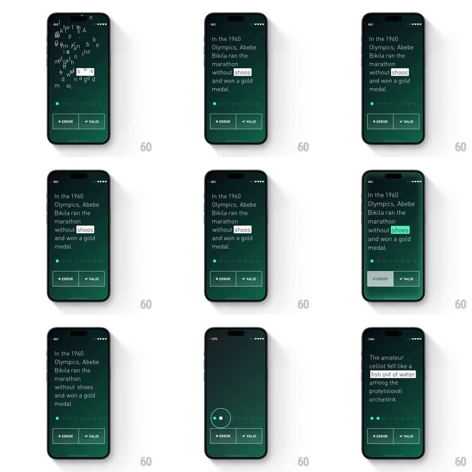

Media
Frame-by-frame

Rebuild this interaction 1:1: Elevate's correct-answer beat - the wrong word's highlight morphs letter-by-letter into the right spelling, then the whole sentence scatters into drifting letters as the game moves on.

Rebuild this interaction 1:1: Elevate's correct-answer beat - the wrong word's highlight morphs letter-by-letter into the right spelling, then the whole sentence scatters into drifting letters as the game moves on.
## Integration
Integration: stack-agnostic spec - springs given as stiffness/damping, timed motions as duration + curve; map every value to your framework and animation library of choice.
## Scene
Elevate question screen, deep green: a reading passage ("In the 1960 Olympics, Abebe Bikila ran the marathon without shoos and won a gold medal.") with the suspect word highlighted white; ERROR / VALID buttons below; a progress dot rail mid-screen.
## Motion spec
Pattern: in-place word correction morph, then a letter-scatter scene transition.
- On the correct answer, the highlighted word's letters rearrange in place: wrong letters fade/shrink out (120ms) and correct letters grow in (scale 0.6 -> 1, spring ~400/18), so "shoos" visibly becomes "shoes"; the highlight flips white -> green with a soft glow pulse (250ms).
- The chosen button flashes its border (200ms) and a small "correct" badge ticks on the progress rail (dot fills, 200ms).
- Hold ~600ms for the correction to read.
- Transition: the passage's letters detach and scatter - each glyph gets a random drift vector and rotation (60-140px, +/-40 degrees, 500-800ms, staggered 6ms per letter) fading out as they float; the screen clears to the next question fading up (300ms).
## Calibration
- The morph is legible - slow enough to watch the spelling fix itself.
- Scatter letters stay crisp (no blur) and thin - elegant, not confetti.
## Reduced motion
Word crossfades to the correction (250ms); passage crossfades out (300ms).
## Don't miss
- Only the corrected word gets the green highlight - the rest of the passage never changes color.
- The scatter starts from the passage, top line first - a top-down peel, not a simultaneous burst.